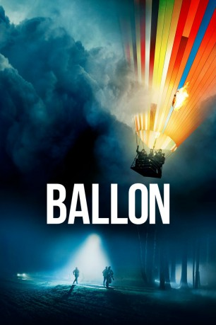

#10839 Ballon
 gesehen am 17.05.2019
gesehen am 17.05.2019
 
 IMDB-Wertung: 7.8 / 10
IMDB-Wertung: 7.8 / 10  Metascore: 0
Metascore: 0 
Die Familien Strelzyk und Wetzel leben in der DDR und wollen weg. Im Sommer 1979 ist es so weit: Nach zwei Jahren harter Arbeit starten Peter, seine Frau Doris und ihre beiden Kinder sowie das Ehepaar Günter und Petra mit seinen zwei Söhnen endlich ihren Fluchtversuch in einem selbstgebauten Heißluftballon. Doch die Flucht aus ihrer Heimat in Thüringen endet kurz vor der innerdeutschen Grenze, als der Ballon abstürzt. Die beiden Familien arbeiten fieberhaft an einem neuen Ballon, denn mittlerweile ist ihnen die Stasi auf die Schliche gekommen und beginnt mit den Ermittlungen. Noch kennt die DDR-Geheimpolizei den Absturzort nicht, doch die Schlinge zieht sich immer enger zu. Es beginnt ein gnadenloser Wettlauf gegen die Zeit…
Jahr: 2018
Dauer: 125 Minuten
FSK: 12
Land: Deutschland Studio: StudioCanalTonspuren:
Untertitel: Deutsch,
Auflösung: 1080p (1920x800) Größe: 7157 MB
Genre: Thriller, Drama, Geschichte
Regisseur:  Michael Herbig
Michael Herbig
Drehbuch: Kit Hopkins, Thilo Röscheisen, Michael Herbig
Soundtrack: Marvin Miller, Ralf Wengenmayr
Darsteller:
 David Kross als Günter Wetzel
David Kross als Günter Wetzel Alicia von Rittberg als Petra Wetzel
Alicia von Rittberg als Petra Wetzel Thomas Kretschmann als Oberstleutnant Seidel
Thomas Kretschmann als Oberstleutnant Seidel Sebastian Hülk als Oberfeldwebel Lesch
Sebastian Hülk als Oberfeldwebel Lesch Ulrich Brandhoff als Oberstleutnat Tornow
Ulrich Brandhoff als Oberstleutnat Tornow Kai Ivo Baulitz als Strehle (Leutnant)
Kai Ivo Baulitz als Strehle (Leutnant) Antje Traue als Kindergärtnerin (Ulrike Piehl)
Antje Traue als Kindergärtnerin (Ulrike Piehl) Peter Prager als Günters Stiefvater
Peter Prager als Günters Stiefvater Tim Williams als Amerikaner
Tim Williams als Amerikaner- Beate Kurecki als Textilverkäuferin
- Sebastian Schwarz als Kuhn
- Timur Bartels als Gefreiter Kenner
 Jörn Hentschel als Joachim Breninek, Fluglehrer
Jörn Hentschel als Joachim Breninek, Fluglehrer- David Altman als Parent (uncredited)
- Friedrich Mücke als Peter Strelzyk
 Karoline Schuch als Doris Strelzyk
Karoline Schuch als Doris Strelzyk- Jonas Holdenrieder als Frank Strelzyk
- Tilman Döbler als Andreas 'Fitscher' Strelzyk
- Christian Näthe als Hauptmann Heym
- Till Patz als Peterchen Wetzel
- Ben Teichmann als Andreas Wetzel
- Ronald Kukulies als Erik Baumann
- Emily Kusche als Klara Baumann
- Gernot Kunert als Oberstleutnant Schirra
- Peter Trabner als Apotheker
- Bernd Michael Lade als Witzke (Oberst)
- Bernd Stegemann als Werner Meissner (SED-Kreisleiter)
- Elisabeth Wasserscheid als Beate Baumann
- Tilo Keiner als Diensthabender Offizier
- Nadja Engel als Günters Mutter
- Thomas Kress als Westpolizist
- Thomas Birnstiel als Westpolizist
- Cornelius Schwalm als Jörg Franke
- Franziska Theiner als Konsumfrau
- Susanne Pfeiffer als
- Christian Gaul als Rezeptionist
- Angelika Koppmann als Textilverkäuferin
- Sandra Lava als Helga
- Stefan Kaminsky als Parteigenosse
- Benjamin Jorns als Volkspolizist in Pößneck
- Thomas Chemnitz als Kriminaltechniker
- Jonas Laux als Pilot
- Andrea Benson als Angestellte US-Botschaft
- Geoffrey Rude als Angestellter US-Botschaft
- Maja Milena Palzkill als Lena
- Henri Stephan als Petras Bruder
- Kaspar Eichel als Erich Mielke
- Daniela Elhagh als
- Angela Jacobi als
- Shirin Lotze als
Datei: X:\2018(A-F)\Ballon (2018, FSK12, 1920x800).mkv seit 10.03.2019
Festplatte: HD 2017(A-Z)-2018(A-F)
 Es gibt insgesamt 151 Filme in der Gruppe '2018(A-F)'
Es gibt insgesamt 151 Filme in der Gruppe '2018(A-F)'